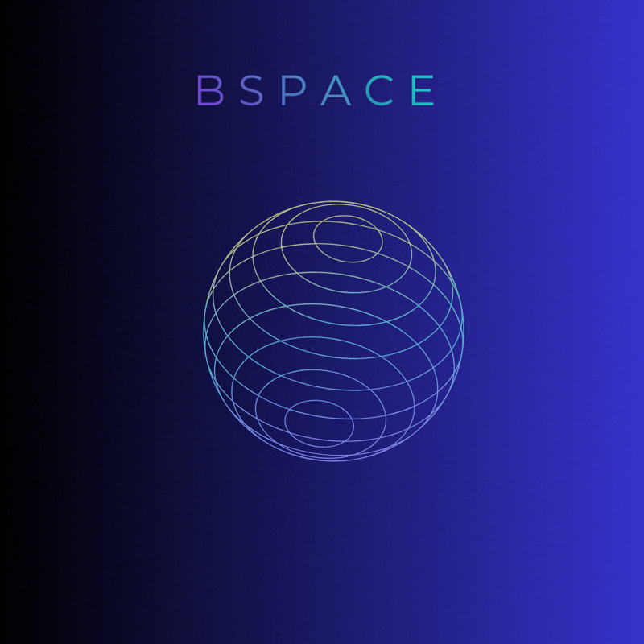

Teste sua exploração
Carregando pergunta...
Escolha uma alternativa para responder ao quiz.

Aprenda um pouco mais sobre as proporções, estrelas e características do nosso universo.
Clique no botão para revelar uma curiosidade astronômica.
Carregando pergunta...
Escolha uma alternativa para responder ao quiz.
Escolha um destino para simular quanto tempo a luz leva para chegar lá.
Mesmo dentro do Sistema Solar, as distâncias são enormes. A luz do Sol leva cerca de 8 minutos para chegar à Terra, mas demora várias horas para alcançar os planetas mais distantes.
As estrelas variam em massa, cor, temperatura e tempo de vida. Algumas são pequenas e estáveis por bilhões de anos; outras consomem seu combustível muito rapidamente.
Por ter massa enorme, Júpiter influencia trajetórias de asteroides e cometas. Essa gravidade pode tanto capturar objetos quanto alterar suas órbitas.